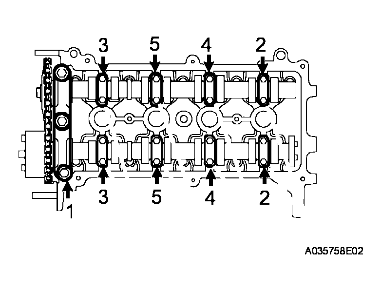
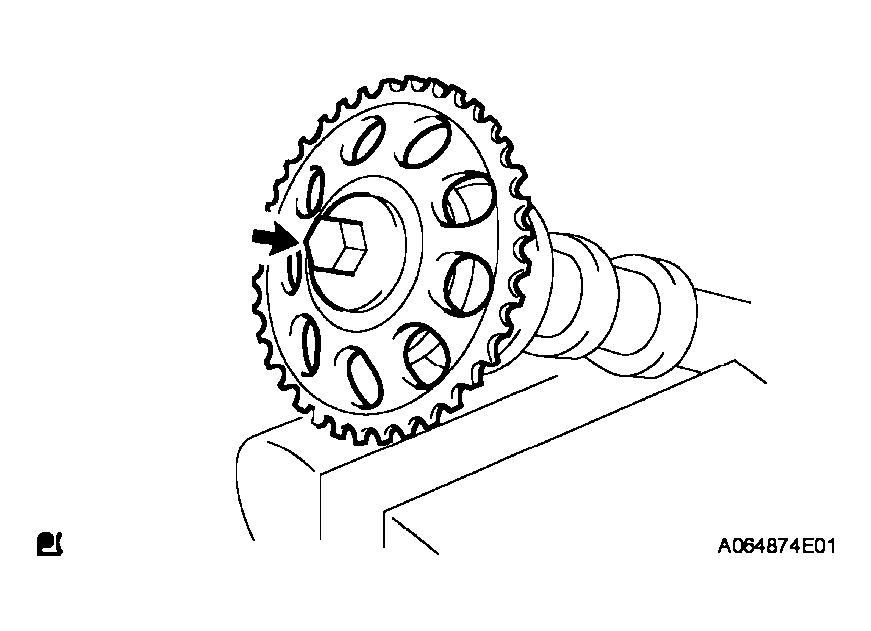
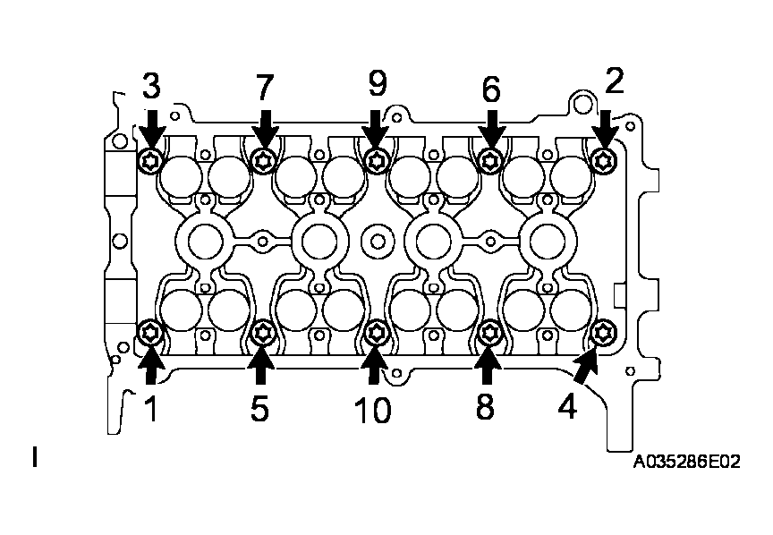

Cylinder Head, Intake Manifold, Exhaust Manifold: Removal
- DISCHARGE FUEL SYSTEM PRESSURE (See REMOVAL )
- DISCONNECT CABLE FROM NEGATIVE BATTERY TERMINAL CAUTION: Wait at least 90 seconds after disconnecting the cable from the negative (-) battery terminal to prevent airbag and seat belt pretensioner activation.
- REMOVE AIR CLEANER (See REMOVAL )
- REMOVE NO. 2 CYLINDER HEAD COVER (See REMOVAL )
- REMOVE FRONT WHEEL RH
- REMOVE ENGINE UNDER COVER RH
- DRAIN ENGINE OIL
- DRAIN ENGINE COOLANT (See ON-VEHICLE INSPECTION )
- DISCONNECT ENGINE WIRE
- DISCONNECT ACCELERATOR CONTROL CABLE (See REMOVAL )
- DISCONNECT FUEL TUBE (See REMOVAL )
- DISCONNECT UNION TO CHECK VALVE HOSE
- Disconnect the union to check valve hose for the brake booster.
- DISCONNECT RADIATOR HOSE INLET
- Disconnect the radiator hose inlet from the union.
- DISCONNECT NO. 1 WATER BYPASS PIPE
- Remove the bolt and disconnect the water bypass pipe.
- DISCONNECT HEATER WATER INLET HOSE
- Disconnect the heater water inlet hose from the No. 2 water bypass pipe.
- REMOVE WATER FILLER
- Disconnect the radiator inlet hose.
- Disconnect the No. 3 radiator hose.
- Disconnect the radiator reservoir hose.
- Remove the 2 bolts and water filler.
- DISCONNECT FRONT EXHAUST PIPE
- Remove the 2 bolts and 2 compression springs which are installed on the front side of the exhaust pipe.
- REMOVE NO. 1 EXHAUST MANIFOLD HEAT INSULATOR
- Remove the 4 bolts and exhaust manifold heat insulator.
- REMOVE MANIFOLD SUPPORT BRACKET
- Remove the 3 bolts and manifold support bracket.
- REMOVE EXHAUST MANIFOLD
- Remove the 3 bolts, 2 nuts, exhaust manifold and gasket.
- REMOVE INTAKE MANIFOLD
- Using several steps, remove the 3 bolts and 2 nuts in the sequence shown in the illustration. Then remove the intake manifold.
- Remove the gasket from the intake manifold.
- REMOVE OIL DIPSTICK GUIDE
- Remove the bolt and dipstick guide.
- REMOVE IGNITION COIL (See REMOVAL )
- REMOVE GENERATOR V BELT (See REMOVAL )
- REMOVE VANE PUMP V BELT (See REMOVAL )
- REMOVE GENERATOR (See REMOVAL )
- REMOVE CAMSHAFT TIMING OIL CONTROL VALVE ASSEMBLY (See REMOVAL )
- DISCONNECT VENTILATION HOSE (See REMOVAL )
- DISCONNECT NO. 2 VENTILATION HOSE (See REMOVAL )
- REMOVE CYLINDER HEAD COVER (See REMOVAL )
- REMOVE WATER PUMP PULLEY (See DISASSEMBLY )
- REMOVE TIMING CHAIN COVER (See DISASSEMBLY )
- REMOVE WATER PUMP (See DISASSEMBLY )
- REMOVE CRANKSHAFT PULLEY (See REMOVAL )
- REMOVE CRANKSHAFT POSITION SENSOR (See REMOVAL )
- REMOVE ENGINE MOUNTING INSULATOR RH (See REMOVAL )
- REMOVE ENGINE MOUNTING BRACKET RH (See REMOVAL )
- REMOVE NO. 1 CHAIN TENSIONER (See REMOVAL )
- REMOVE CHAIN TENSIONER SLIPPER (See REMOVAL )
- REMOVE NO. 1 CHAIN VIBRATION DAMPER (See REMOVAL )
- REMOVE CHAIN
- REMOVE FUEL DELIVERY PIPE (See DISASSEMBLY )
- REMOVE FUEL INJECTOR (See DISASSEMBLY )
- REMOVE CAMSHAFT
- Using several steps, uniformly loosen and remove the 19 bearing cap bolts in the sequence shown in the illustration, and then remove the 9 bearing caps, and the No. 1 and No. 2 camshafts.

Courtesy of © TOYOTA, LICENSE AGREEMENT TMS1002NOTE: Loosen each bolt uniformly, keeping the camshaft level.
- Using several steps, uniformly loosen and remove the 19 bearing cap bolts in the sequence shown in the illustration, and then remove the 9 bearing caps, and the No. 1 and No. 2 camshafts.
- REMOVE CAMSHAFT TIMING GEAR
- Turn the camshaft timing gear at the most advanced angle (see ).
- Remove the flange bolt and camshaft timing gear.
- REMOVE CAMSHAFT TIMING SPROCKET
- Clamp the camshaft in a vise.
- Remove the flange bolt and camshaft timing sprocket.

Courtesy of © TOYOTA, LICENSE AGREEMENT TMS1002NOTE: Be careful not to damage the camshaft.
- REMOVE CYLINDER HEAD
- Using several steps, uniformly loosen and remove the 10 cylinder head bolts with an 8 mm bi-hexagon wrench in the sequence shown in the illustration.
Remove the 10 cylinder head bolts and plate washers.

Courtesy of © TOYOTA, LICENSE AGREEMENT TMS1002NOTE:- Be careful not to drop the washers into the cylinder head.
- Head warpage or cracking could result from removing bolts in the incorrect order.
- Using several steps, uniformly loosen and remove the 10 cylinder head bolts with an 8 mm bi-hexagon wrench in the sequence shown in the illustration.
- REMOVE CYLINDER HEAD GASKET